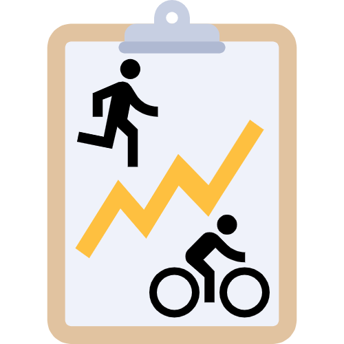
Self-hosted server for recording and analyzing your workout data. All data stays on your own server.
Log your workouts and analyze your training data on a server you fully control.
SportTracker supports multiple users. Each user registers with their own account, so everyone's workout data stays completely separate.
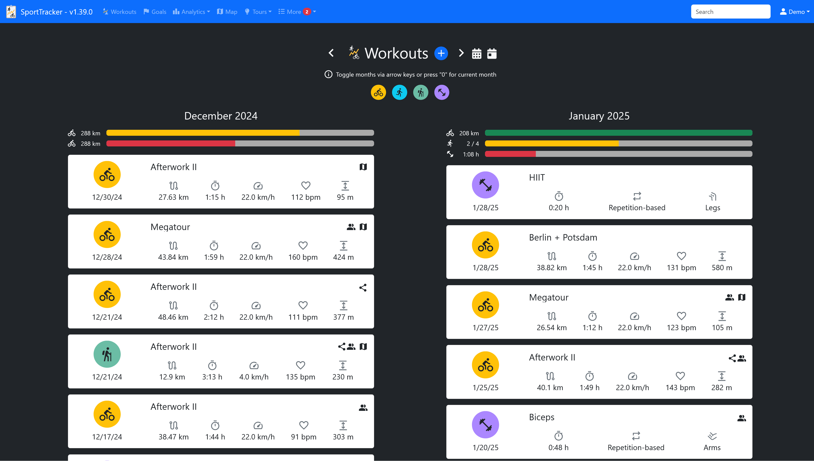
Log your completed workouts and capture detailed information for every session. Supported workout types:
Workouts can also be shared via public links.
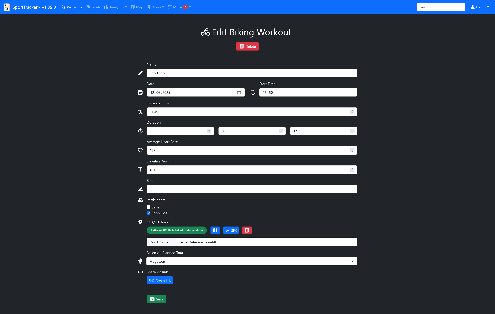
Set monthly goals for distance, duration or number of workouts and track your progress toward each goal on a live progress bar.
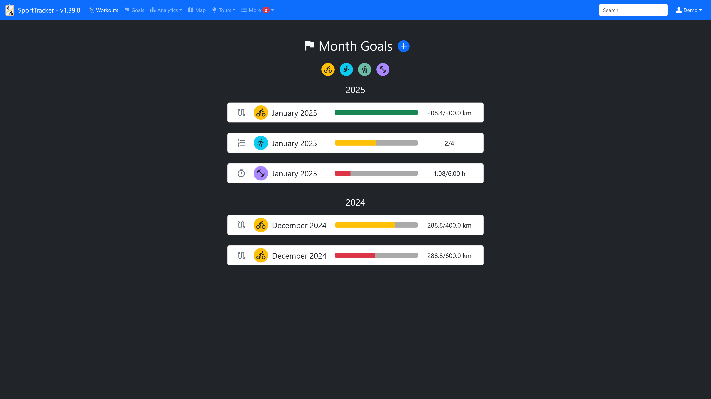
Add heart rate data to any workout via the SportTracker API and view it as a chart.
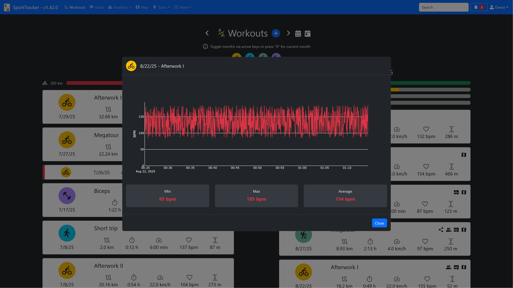
Attach a GPX recording to any distance-based workout and view your tracks on a map. Either all tracks in a single overview or one track at a time with additional details, like the track line colored by speed.
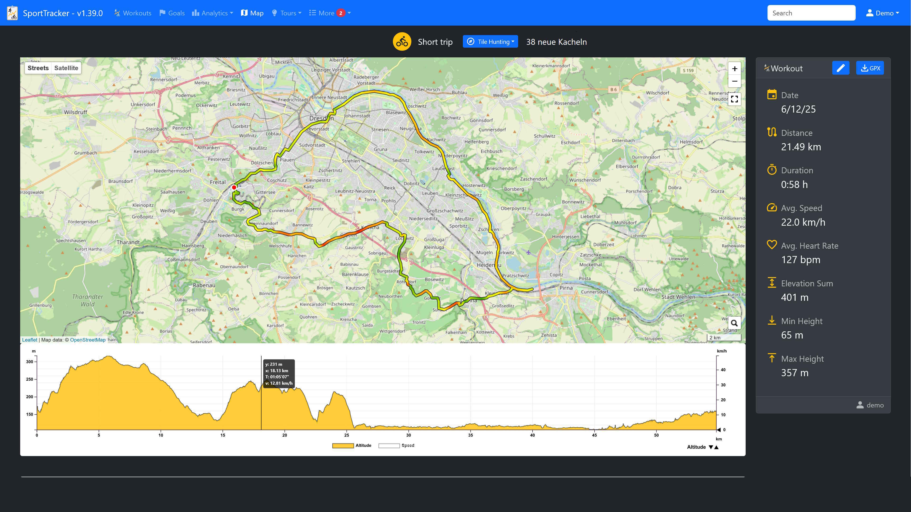
SportTracker also supports Garmin .fit files in addition to GPX. On upload, a GPX file is generated automatically and both files are stored in the data folder. A .fit file can also be used to prefill the workout form with values like duration and distance.
Tile hunting divides the world map into roughly same-sized tiles and lets you track which ones you have already visited. It can be enabled optionally per user: a great way to discover new areas or stay motivated to explore new routes.
The map shows all tiles you have visited, with the largest square area completely covered by your tiles highlighted. By default a tile matches an OpenStreetMap tile at zoom level 14, configurable in the settings file. The map can also be shared via a code to add a custom overlay in tools like bikerouter.de.
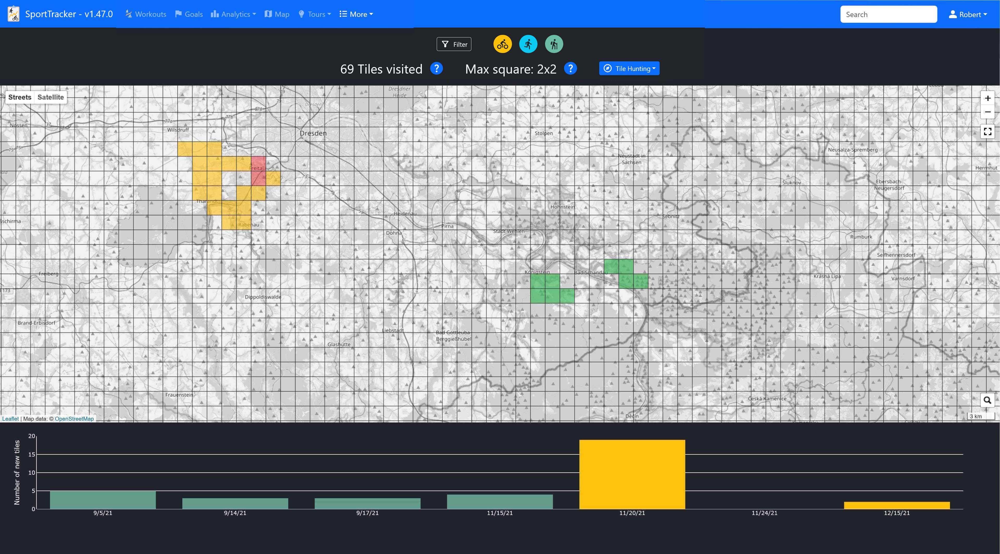
Each tile is colored according to the number of workouts visiting it. Click on a tile to get the exact number of visits.
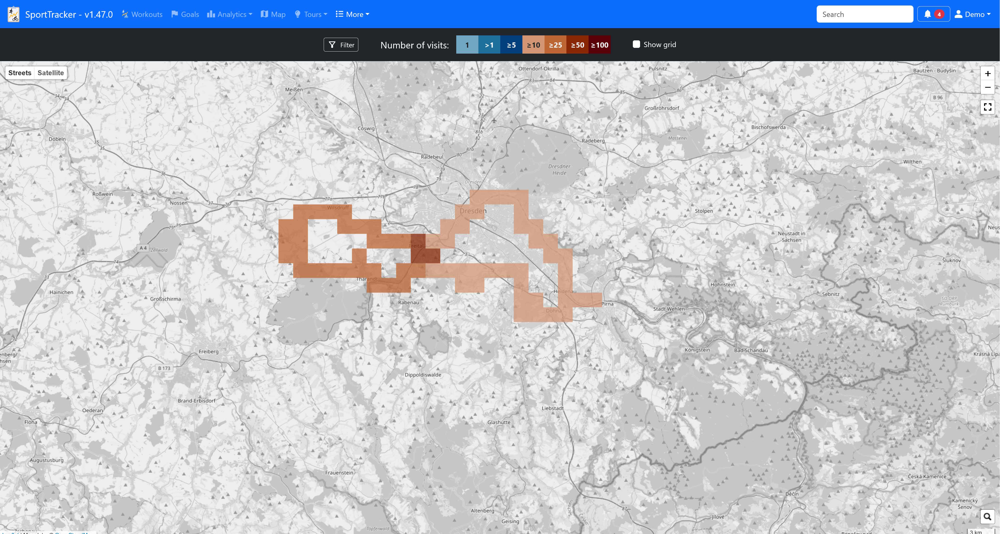
See the tile hunting map for a single workout as well.
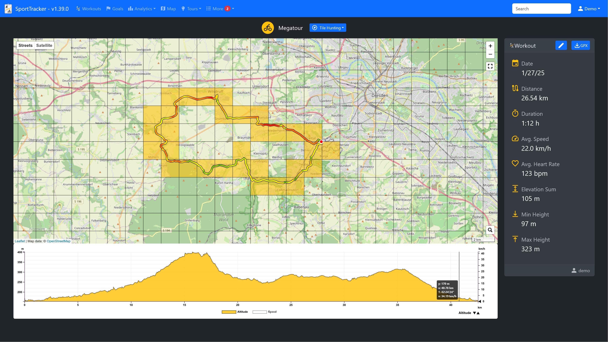
Tracked data is visualized in interactive charts, e.g. distance per month, average speed or duration per workout.
Examples of the available charts.
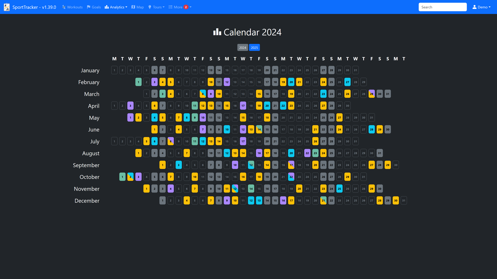
Each year is summarized for every workout type, giving you a quick overview of your progress over time.
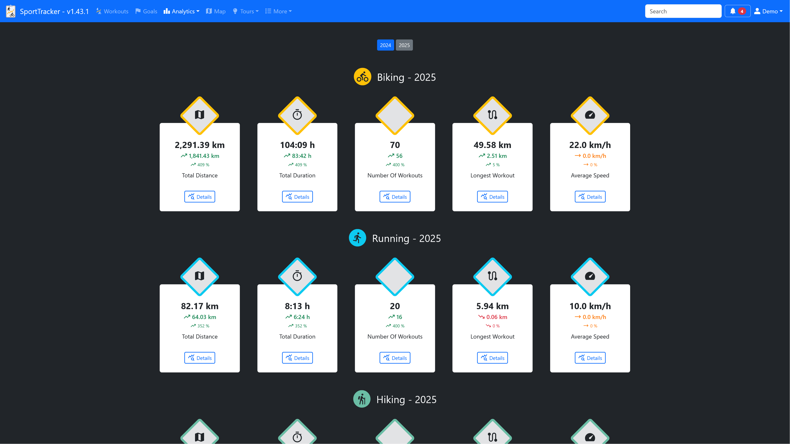
The achievement page shows aggregated information about all your workouts.
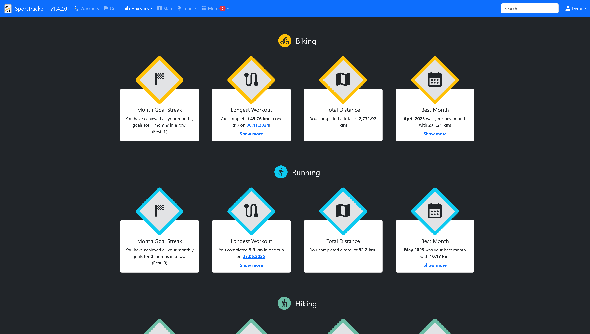
Track your body weight over time. Statistics, a weight-over-time chart and your body mass index (BMI) are shown on the overview page.
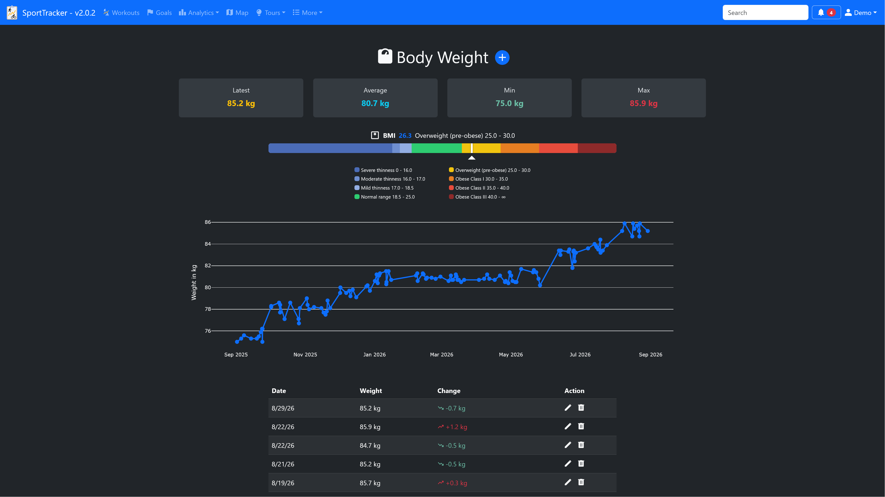
Plan and save routes for distance-based workout types and view them on a map. Share planned tours with other users or create public links, and link the corresponding workout once you have actually completed a tour.
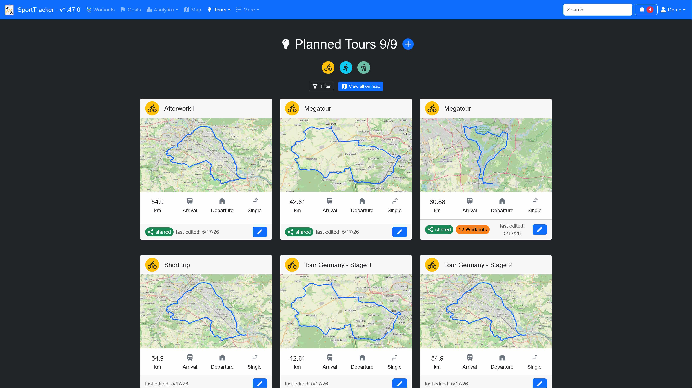
Combine multiple planned tours into a long-distance tour and treat them as stages. Track your progress on how many stages you have already completed and use the overview map to prepare for upcoming stages.
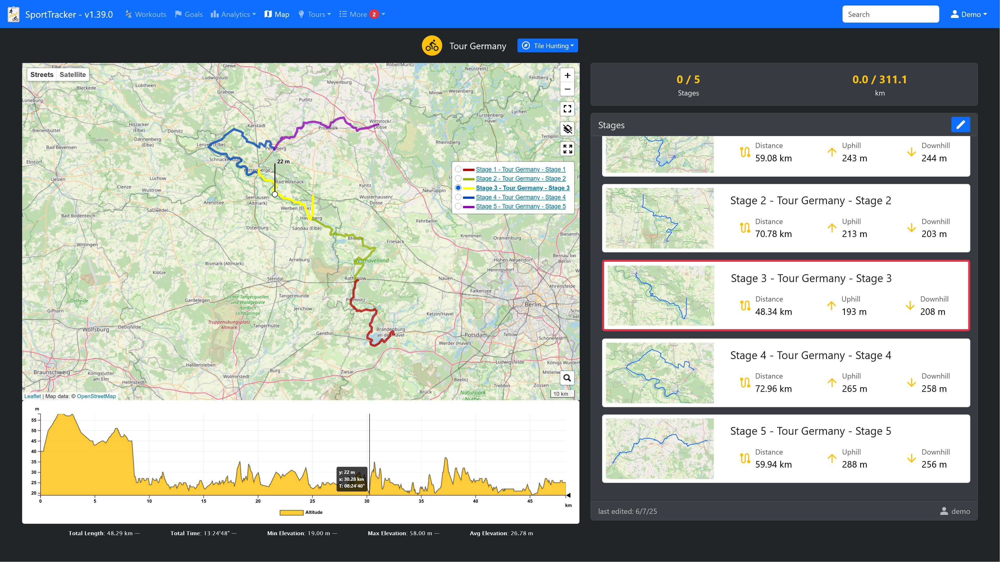
Record maintenance events for each workout type and set reminders. SportTracker can send notifications via a ntfy server once a reminder is triggered.
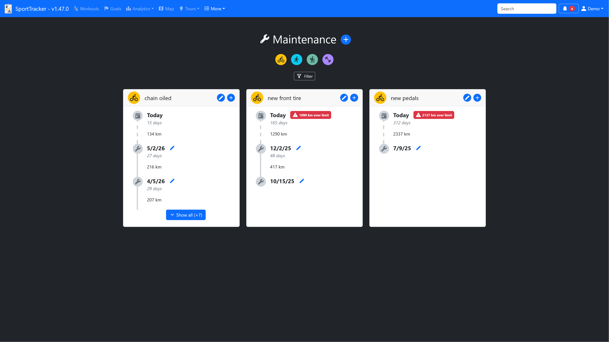
SportTracker creates notifications on certain events, e.g. surpassed workout records, reached month goals and shared tours. All notifications are shown in the notification center and can also be sent via a notification provider.
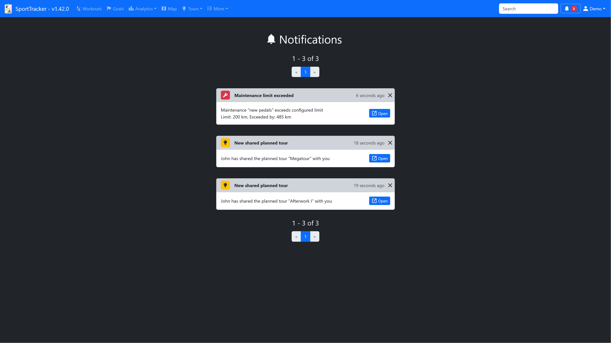
Pick the way you want to run your own SportTracker instance. For the full step-by-step guide, see the README.
docker-compose.yaml to your server.settings.json (based on settings-example.json) in that path.docker compose up --build.admin with the generated password from the console output.poetry install --no-root --without dev.npm install and npm run build inside the js folder.settings-example.json to settings.json and adjust it to your setup.src/SportTracker.py.SportTracker exposes a REST API for the most common use cases, e.g. adding workouts or heart rate data.
Once your instance is running, interactive API documentation (Swagger UI) is available at /api/v2/docs.